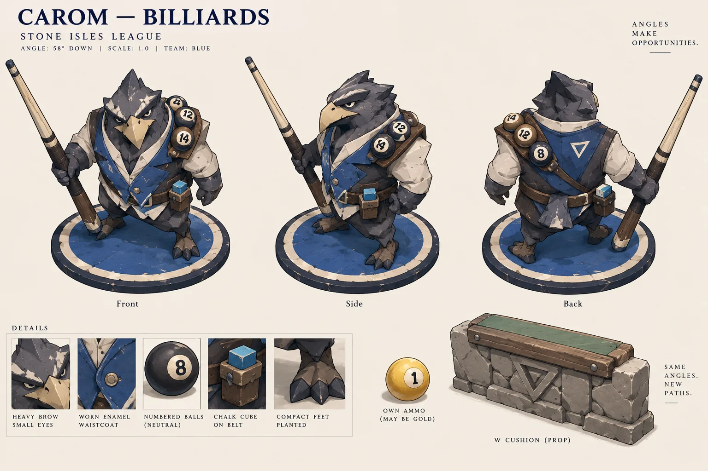
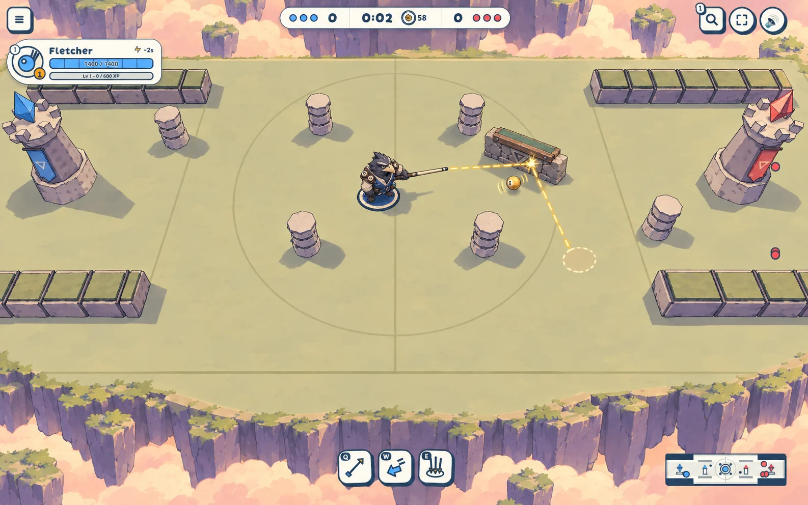
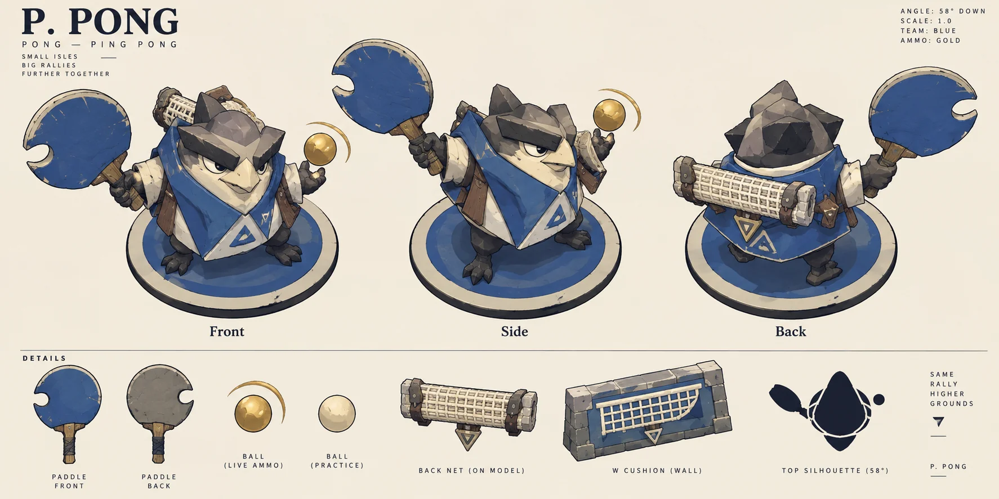
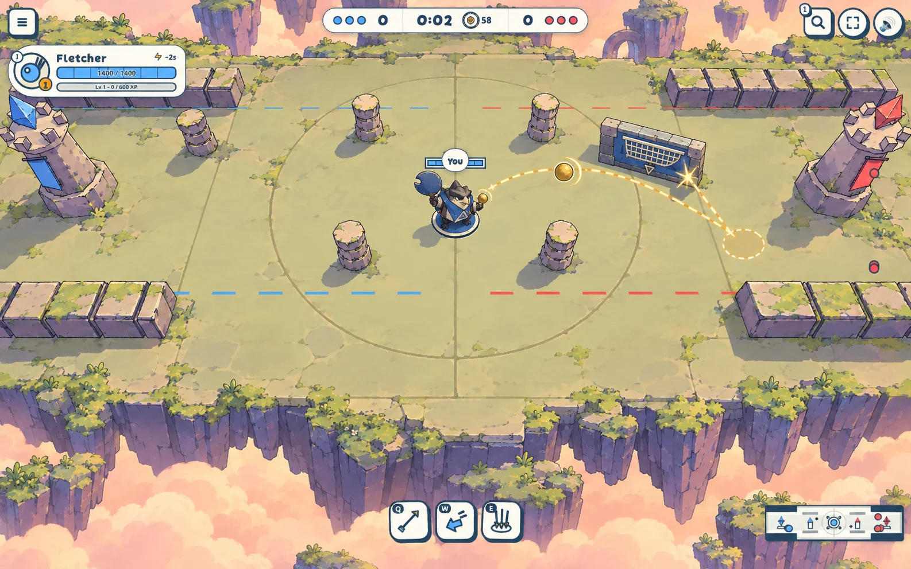

Carom or Pong
2026-10-11 · To review · Decision: awaiting Oskar
Billiards or ping pong for Carom?
Two directions for the trick-shot hero: Q Bank ricochets off walls; W Cushion places a bank wall; E Swap trades places with his own ball after its bounces. Both keep a forward triangle, a prop held clear of the body, small eyes under a brow and worn hard materials.
A · Carom, billiards
Readability at the 58° match camera: the long cue makes a sharp, distinctive line beside the forward triangle; numbered balls and chalk need the sheet to read as billiards.
| Concept | Generation prompt |
|---|---|
|
 |
PromptExact generation promptUse case: stylized-concept. Production concept art for a MOBA on old floating stone isles. Cute with swagger, N64/early PlayStation Japan confidence, Moebius navy ink with worn chunky fantasy weight. NOT plush: no fluffy fabric, blush, glossy big eyes, pastel-on-pastel. Small eyes under a heavy brow, hard beak/horn edge, bottom-heavy planted stance. Simple buildable faceted geometry, broad flat colour planes, thick navy ink on units, worn surfaces only at edges. Saturated blue and red exclusively identify teams; gold exclusively Ball/ammo. Neutral bone, cream, charcoal, muted wood and desaturated sage otherwise. Hero silhouette from above is a rounded forward triangle, point facing forward, prop held clear of body. Hero at common 1.0 scale on a flat blue team disc with navy rim and cream outer ring. Asset: one wide character sheet for direction A, CAROM — BILLIARDS. Three equal-sized full-body turnarounds labelled Front, Side, Back; EACH seen from the game's camera pitched 58 degrees downward from horizontal, not eye-level orthographic. Quiet cream background. A cocky compact beaked stone-isle creature in a triangular worn enamel/wood waistcoat, pointed brow and small feet. A long thick readable ivory-and-dark-wood billiards cue held diagonally out beside the body, clearly separated in silhouette at 58 degrees. Neutral numbered ivory/charcoal balls with clear number medallions strapped high across shoulders; small cube of muted chalk attached to belt. Team blue only waistcoat panel and foot disc. No gold jewellery. Show a small supporting W Cushion prop off to one side: low chunky stone bank wall capped with a narrow muted sage billiard-felt strip and worn wooden rail, no literal pool table, no plush body. A tiny own ammunition ball may be gold with a number. Swagger stance with one shoulder forward. No environment or HUD. Keep rear and side consistent, readable cue in all views. |
|
 |
PromptExact generation promptUse case: stylized-concept. Production concept art for a MOBA on old floating stone isles. Cute with swagger, N64/early PlayStation Japan confidence, Moebius navy ink with worn chunky fantasy weight. NOT plush: no fluffy fabric, blush, glossy big eyes, pastel-on-pastel. Small eyes under a heavy brow, hard beak/horn edge, bottom-heavy planted stance. Simple buildable faceted geometry, broad flat colour planes, thick navy ink on units, worn surfaces only at edges. Saturated blue and red exclusively identify teams; gold exclusively Ball/ammo. Neutral bone, cream, charcoal, muted wood and desaturated sage otherwise. Hero silhouette from above is a rounded forward triangle, point facing forward, prop held clear of body. Hero at common 1.0 scale on a flat blue team disc with navy rim and cream outer ring. Asset: ONE in-match concept frame, landscape 1440x900. Image 1 is a REAL GAME SCREENSHOT and the edit target: lock its camera pitch of 58 degrees, exact map perspective and framing, pillar locations, wall layout, central player location, and ALL HUD pixels/text/icons/positions. Keep the existing Fletcher panel text as supplied: this is an art mockup, do not invent a new HUD. Image 2 is the hero character sheet: copy only its creature design, prop, materials and triangular silhouette. Image 3 is the selected Sun Spell STYLE ANCHOR: take broad planes, warm sunlight, pale peach cloud/sky, dark violet cliff band, muted sage court and worn stone isles ONLY. Correct its too-soft creatures; do NOT copy its HUD, extra ornaments, glossy eyes, stars, saturated flowers or noisy ground. Render Overthrow as a crisp lit plateau with dark cliff faces dropping into a warm sea of cloud, thin-lined scenery, NO line or texture on the flat quiet court; preserve the screenshot's actual layout. Keep heroes hero-sized, not giant promotional foreground models: central hero and prop roughly 65 pixels tall in a 900px-high frame, on supplied player disc, leaving plenty of combat space. Show a small nearby rigid W Cushion bank wall and one clean angular Q ricochet trajectory touching its face, live gold own ammo with only a short spin/bounce streak, and a faint cream departed-position outline for E Swap. Q Bank bounces; W Cushion places a bank wall; E Swap trades places with the own ball after bounces. Do not use the old documented W/E kit. No explanatory captions, no inset portraits, no promotional titles. Same HUD, camera, shot and lighting for both directions. Direction A: Carom — billiards. Replace ONLY the central player model with the sheet's blue-team beaked triangular creature, readable long chunky cue held out clear from body, shoulder numbered balls and chalk cube. Nearby W Cushion has worn wood rail and narrow dull sage billiard-felt top, not plush material. The numbered gold own shot has ricocheted off this wall. Do not turn the court into a pool table. |


B · Pong, ping pong
Name alternative: P. Pong. The sheet tries it on; the direction is Pong.
Readability at the 58° match camera: the broad paddle and open notch read sooner than the cue, while the pointed body keeps Carom’s forward triangle; the net and spin are supporting details.
| Concept | Generation prompt |
|---|---|
|
 |
PromptExact generation promptUse case: stylized-concept. Production concept art for a MOBA on old floating stone isles. Cute with swagger, N64/early PlayStation Japan confidence, Moebius navy ink with worn chunky fantasy weight. NOT plush: no fluffy fabric, blush, glossy big eyes, pastel-on-pastel. Small eyes under a heavy brow, hard beak/horn edge, bottom-heavy planted stance. Simple buildable faceted geometry, broad flat colour planes, thick navy ink on units, worn surfaces only at edges. Saturated blue and red exclusively identify teams; gold exclusively Ball/ammo. Neutral bone, cream, charcoal, muted wood and desaturated sage otherwise. Hero silhouette from above is a rounded forward triangle, point facing forward, prop held clear of body. Hero at common 1.0 scale on a flat blue team disc with navy rim and cream outer ring. Asset: one wide character sheet for direction B, PONG — PING PONG (possible name P. Pong). Three equal-sized full-body turnarounds labelled Front, Side, Back; EACH seen from the game's camera pitched 58 degrees downward from horizontal, not eye-level orthographic. Quiet cream background. A cocky compact beaked stone-isle creature with a sharp wedge brow, small eyes, triangular worn wood/enamel jacket and small planted feet. An oversized recognisable round ping-pong paddle, with a cutout crescent/open gap in its outer rim and visible wood handle, held out beside shoulder to maintain separated open negative space at 58 degrees; it still reads as a table-tennis bat, not a tennis racket. Team-blue rubber on paddle and jacket panel; muted neutral underside, NOT regulation bright red rubber on this blue hero. Celluloid ball carried high by shoulder: cream practice ball, gold only when live own ammo. Short ivory mesh net rolled across back, never obscuring triangular body silhouette. Small supporting W Cushion wall off to side is a low rigid stone-framed bank panel with an ivory net motif on its face: solid bank surface, not a pass-through loose net. Suggest spin with two crisp arc strokes around own gold ammo, not glitter. No environment or HUD. Swagger, same scale and proportions across views. |
|
 |
PromptExact generation promptUse case: stylized-concept. Production concept art for a MOBA on old floating stone isles. Cute with swagger, N64/early PlayStation Japan confidence, Moebius navy ink with worn chunky fantasy weight. NOT plush: no fluffy fabric, blush, glossy big eyes, pastel-on-pastel. Small eyes under a heavy brow, hard beak/horn edge, bottom-heavy planted stance. Simple buildable faceted geometry, broad flat colour planes, thick navy ink on units, worn surfaces only at edges. Saturated blue and red exclusively identify teams; gold exclusively Ball/ammo. Neutral bone, cream, charcoal, muted wood and desaturated sage otherwise. Hero silhouette from above is a rounded forward triangle, point facing forward, prop held clear of body. Hero at common 1.0 scale on a flat blue team disc with navy rim and cream outer ring. Asset: ONE in-match concept frame, landscape 1440x900. Image 1 is a REAL GAME SCREENSHOT and the edit target: lock its camera pitch of 58 degrees, exact map perspective and framing, pillar locations, wall layout, central player location, and ALL HUD pixels/text/icons/positions. Keep the existing Fletcher panel text as supplied: this is an art mockup, do not invent a new HUD. Image 2 is the hero character sheet: copy only its creature design, prop, materials and triangular silhouette. Image 3 is the selected Sun Spell STYLE ANCHOR: take broad planes, warm sunlight, pale peach cloud/sky, dark violet cliff band, muted sage court and worn stone isles ONLY. Correct its too-soft creatures; do NOT copy its HUD, extra ornaments, glossy eyes, stars, saturated flowers or noisy ground. Render Overthrow as a crisp lit plateau with dark cliff faces dropping into a warm sea of cloud, thin-lined scenery, NO line or texture on the flat quiet court; preserve the screenshot's actual layout. Keep heroes hero-sized, not giant promotional foreground models: central hero and prop roughly 65 pixels tall in a 900px-high frame, on supplied player disc, leaving plenty of combat space. Show a small nearby rigid W Cushion bank wall and one clean angular Q ricochet trajectory touching its face, live gold own ammo with only a short spin/bounce streak, and a faint cream departed-position outline for E Swap. Q Bank bounces; W Cushion places a bank wall; E Swap trades places with the own ball after bounces. Do not use the old documented W/E kit. No explanatory captions, no inset portraits, no promotional titles. Same HUD, camera, shot and lighting for both directions. Direction B: Pong — ping pong, optional name P. Pong. Replace ONLY the central player model with the sheet's blue-team beaked triangular creature, oversized broad table-tennis paddle with an open notched rim held clear beside the body, ivory rolled net at upper back. Nearby W Cushion is a rigid stone-framed solid blue bank panel with cream net motif (not a loose net that a ball passes through). Gold live celluloid ammo, crisp spin arcs; paddle shape stays legible above the head. No pool cue, no numbered billiard balls, no table-tennis court. |


My pick: Pong. The paddle identifies the sport at match distance; the cue needs the numbered balls to finish the explanation.
Generated targets, not game assets. Both match frames use the same real Overthrow screenshot as image 1 and retain its HUD content, including the Fletcher panel. The generation redraws the HUD and perspective rather than producing pixel-exact overlays. Both sheets request front, side and back at 58°; the generated side poses remain slightly turned toward the viewer.
Blue and red identify teams; gold is reserved for the Ball and live ammo. Carom’s felt is only a muted cushion strip, never his body. Pong’s net motif sits on a rigid bank panel so Cushion still reflects shots.
Image 1: real match screenshot · Style anchor: Sun Spell · All exact prompts and reference order · Look direction